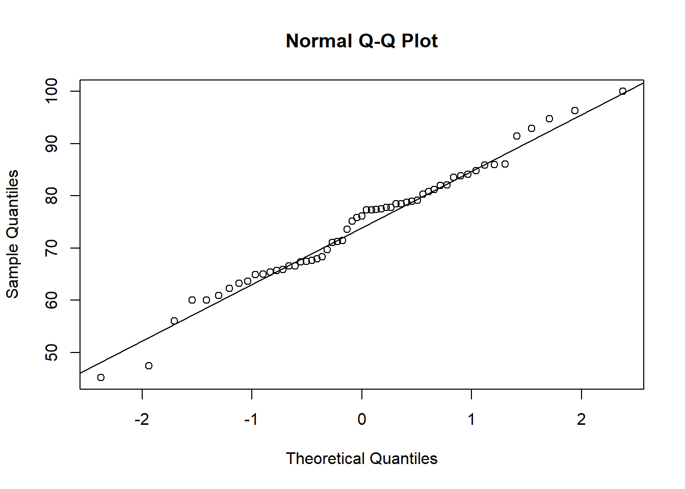

3 假設檢定
以R語言讀入資料並做假設檢定，包含常態檢定、獨立與相依t檢定。
3.1 讀入檔案
以xlsx套件的read.xlsx()函數或readxl套件的read_xlsx()函數來讀入上個單元中所存出的gData1.xlsx檔。
## # A tibble: 6 × 8
## 學號 性別 組別 出席 影片 期中考 期末考 總成績
## <chr> <chr> <dbl> <dbl> <dbl> <dbl> <dbl> <dbl>
## 1 102368014 M 9 8.5 82.6 32 28 56.0
## 2 102368018 M 10 9.5 82.9 66 59 78.8
## 3 102368024 F 9 8 82.6 69 68 81.2
## 4 102368027 F 9 8 82.6 68 83.5 86.0
## 5 102368030 F 11 0 66.5 39 30 45.2
## 6 100368033 M 4 12 73.3 58 79 82.13.2 常態檢定
以qqnorm()和qqline()來看常態Q-Q圖。

以shapiro.test()做常態檢定。
shapiro.test(gData1$總成績)##
## Shapiro-Wilk normality test
##
## data: gData1$總成績
## W = 0.98346, p-value = 0.62433.3 獨立樣本t檢定
先將性別轉為factor。
gData1$性別 <- factor(gData1$性別)以leveneTest()做變異數同質性檢定。
library(car)
leveneTest(gData1$總成績 ~ gData1$性別, center="mean")## Levene's Test for Homogeneity of Variance (center = "mean")
## Df F value Pr(>F)
## group 1 0.2112 0.6476
## 55以獨立樣本t檢定比較男女在總成績上是否有差異。
t.test(gData1$總成績 ~ gData1$性別, var.equal=TRUE)##
## Two Sample t-test
##
## data: gData1$總成績 by gData1$性別
## t = -0.62999, df = 55, p-value = 0.5313
## alternative hypothesis: true difference in means between group F and group M is not equal to 0
## 95 percent confidence interval:
## -7.892010 4.116907
## sample estimates:
## mean in group F mean in group M
## 73.43611 75.323663.4 相依樣本t檢定
以t.test()做相依樣本t檢定，比較期中考和期末考是否有差異。
t.test(gData1$期中考, gData1$期末考, pair=TRUE)##
## Paired t-test
##
## data: gData1$期中考 and gData1$期末考
## t = -2.3616, df = 56, p-value = 0.0217
## alternative hypothesis: true mean difference is not equal to 0
## 95 percent confidence interval:
## -8.3334024 -0.6841415
## sample estimates:
## mean difference
## -4.508772t.test()預設為雙尾檢定，若要做單尾檢定，可加入alternative的參數，可設定為”greater” 或 “less”。
t.test(gData1$期中考, gData1$期末考, alternative='less', pair=TRUE)##
## Paired t-test
##
## data: gData1$期中考 and gData1$期末考
## t = -2.3616, df = 56, p-value = 0.01085
## alternative hypothesis: true mean difference is less than 0
## 95 percent confidence interval:
## -Inf -1.315556
## sample estimates:
## mean difference
## -4.508772